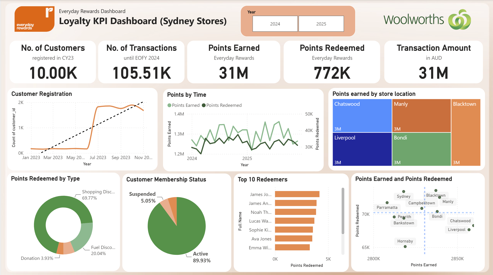
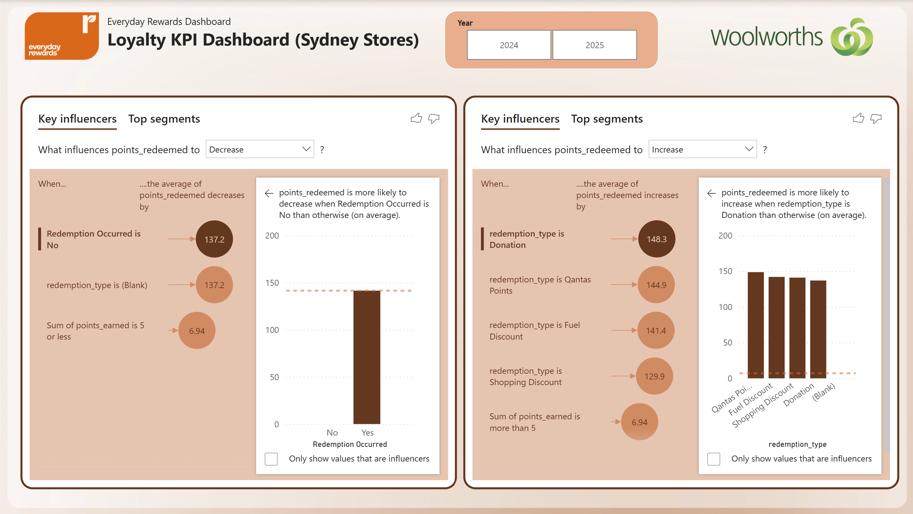
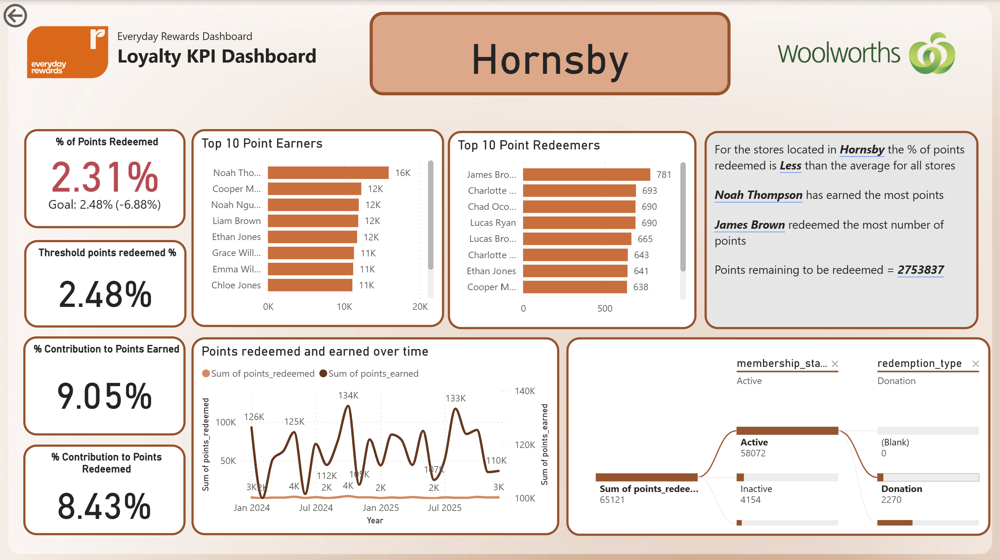
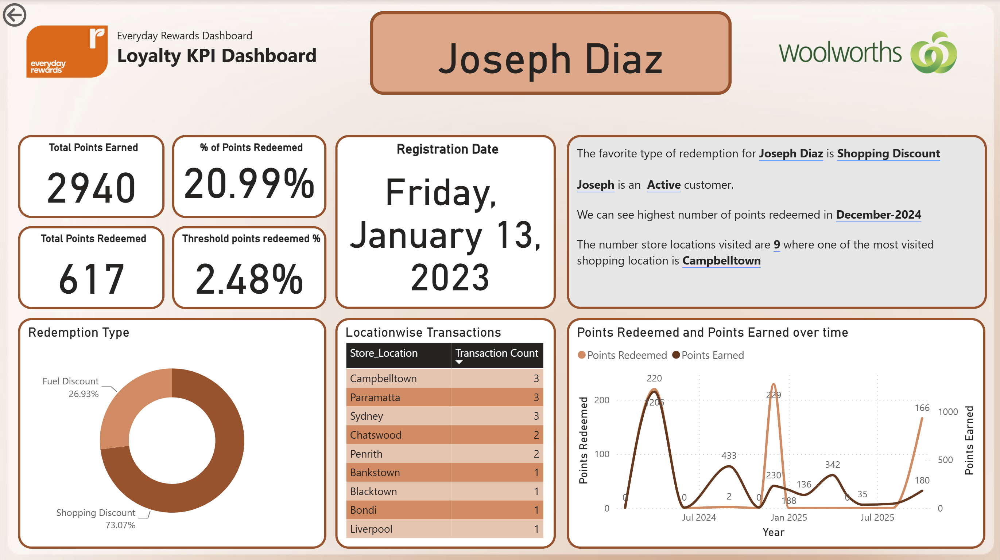

An interactive Power BI dashboard analysing Everyday Rewards loyalty program performance across Sydney stores — tracking member engagement, points activity, and reward redemption to support data-driven retention strategy.

Headline KPI cards, customer registration trend, points earned vs redeemed over time, points earned by store, redemption mix, membership status, and top redeemers — all filterable by year.

Power BI's built-in AI analysis surfacing what drives points redeemed to be high or low, ranked by influence strength with population counts and average values per segment.

Store-level KPIs against goal, top earners and redeemers at that location, contribution to network totals, a redemption trend chart, and an auto-generated narrative comparing the store to the network average.

An individual member profile with points earned/redeemed, registration date, favourite redemption type, store visit history, and an auto-generated narrative summary of their activity.
Designed and developed an interactive Power BI dashboard to analyse the performance of the Everyday Rewards loyalty program across Sydney stores. The dashboard enables business users to monitor key loyalty metrics, evaluate customer engagement, and identify opportunities to improve reward redemption and member participation.
The solution provides an executive-level overview of the loyalty program through dynamic KPIs, trend analysis, customer segmentation, and location-based performance monitoring, with year and store-level filtering for deeper drill-down.
Loyalty program metrics were scattered across sources, making it difficult to monitor engagement and redemption at a glance.
Without visibility into active, inactive, and suspended members, retention opportunities were being missed.
Limited insight into which reward categories customers redeem made it hard to plan targeted, effective promotions.
Cleaned and structured loyalty transaction data covering members, stores, points earned and redeemed, and reward categories across Sydney locations.
Built a relational data model and DAX measures to calculate KPIs including total members, transactions, points earned, points redeemed, and transaction value.
Designed KPI cards, trend visuals, and segmentation charts, connected to year and store slicers for dynamic, cross-filtered exploration.
Applied Power BI's Key Influencers visual to identify what drives points redemption up or down, surfacing the top segments behind each outcome.
Built store- and customer-level drill-through pages with rankings, KPI comparisons, trend analysis, and automated business insights.
Customer registration trends show consistent growth, reflecting strong ongoing uptake of the loyalty program.
Points earned consistently exceed points redeemed, pointing to untapped reward value and an opportunity to drive redemption.
A small group of Sydney stores accounts for a disproportionate share of loyalty point activity, highlighting where engagement is strongest.
Redemption activity varies meaningfully across shopping discounts, fuel discounts, and partner rewards, revealing distinct member preferences.
Use the KPI overview to track member growth, transactions, and points activity as ongoing measures of loyalty program performance.
Target inactive and suspended segments with re-engagement campaigns informed by the member status breakdown.
Study the practices of top-performing stores and apply successful engagement tactics across underperforming locations.
Use redemption-by-category data to prioritise the reward types members value most, closing the gap between points earned and redeemed.
Leverage top earner and redeemer rankings to design personalised offers and recognition for high-value members.
Incorporate campaign response and basket-level data to deepen segmentation and sharpen future retention strategy.